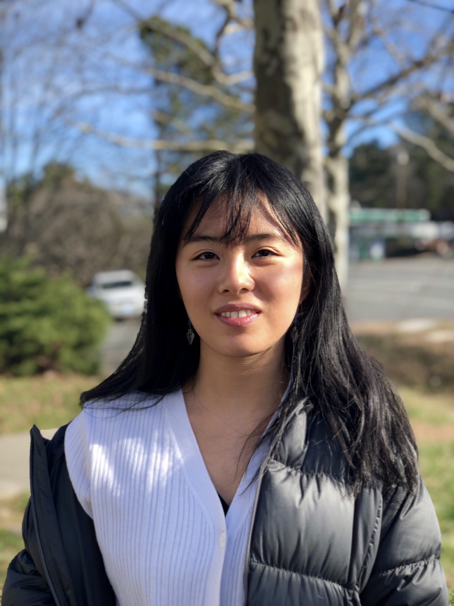

|  |
Ellie Kim
Fourth-Year Duke University student
Department of Computer Science
|
Hi! My name is Ellie. I am currently a fourth-year undergrad student at Duke University studying Computer Science.
To learn more about my past projects, check out my resume here. In my free time, I also enjoy writing poetry, dancing to open-style and
hip-hop, watching films, and playing Chopin's Ballade No. 1 on the piano. And of course, writing and experimenting with code. :)
Link to: Contact Me!
Research
- Multi-Robot Motion Planning in Parallel and Weakly-Monotone Scenarios
- Over the summer of 2022, I was in the Duke research program CS+ and investigated a problem known as MRMP-RA. To solve this problem, we created various algorithms and heuristics, which we tested in our C++ codebase.
- To read more about my work in this, check out my summarizing paper about it here.
- This fall (2022), I will continue to investigate the MRMP problem with a special focus on the situation where parallel movement of the robots is allowed.
Writing
- Intro to Writing Poetry (ENGLISH 220S at Duke): Find a sample of my poems here.
- Previous Writing Accolades: I received the Sherry Pruitt award in the NC Poetry Society Student Contest (Spring 2021) for my poem, "Dreams of an Elementary School Friend" (found in the portfolio above)